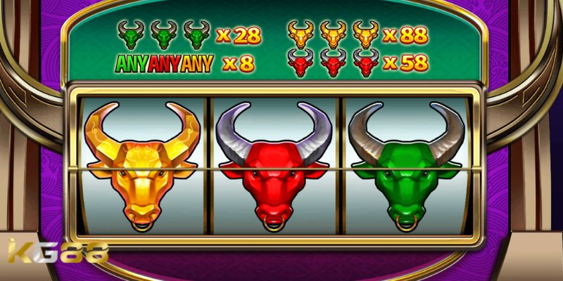
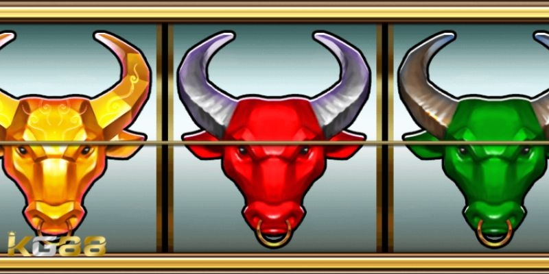

NỔ HŨ KG88
Mẹo Chơi Siêu Bò Tót B – Game Nổ Hũ Đình Đám 2024
POSTED ON THÁNG SÁU 26, 2024 BY ADMINKG88

Mẹo chơi siêu bò tót B cụm từ khóa được nhiều người chơi quan tâm. Đây là một trò chơi hấp dẫn đem đến cho người chơi những phần thưởng khủng. Nhưng để giành chiến thắng trong trò chơi anh em cần nắm vững các kỹ thuật và chiến lược cụ thể. Bài viết này KG88 blog sẽ cung cấp cho bạn những thông tin cơ bản về nổ hũ siêu bò tót cũng như các bí quyết để luôn giành chiến thắng với tỷ lệ 100%.
Khám phá về trò chơi nổ hũ siêu bò tót B là gì?
Trước khi tìm hiểu mẹo chơi siêu bò tót B hãy cùng tìm hiểu về khái niệm của trò chơi này. Siêu Bò Tót B là một trò chơi nổ hũ độc đáo, thú vị đem đến cho người chơi những trải nghiệm độc đáo. Trò chơi với 1 hàng và 3 cột, với cách chơi đơn giản tuy nhiên nếu không có mẹo chơi rất khó chiến thắng.
Hướng dẫn cách truy cập vào game nổ hũ siêu bò tót B
Để trải nghiệm trò chơi nổ hũ siêu bò tót B, người chơi có thể làm theo các bước sau đây:
- Bước 1: Thành viên cần truy cập vào sảnh Nổ Hũ KG88. Tại đây, thành viên hãy tìm kiếm trò chơi nổ hũ siêu bò tót B bằng cách xem trong phần trò chơi hot và tìm biểu tượng hình đầu bò.
- Bước 2: Người chơi sử dụng từ khóa “Siêu Bò Tót”: Ngoài ra, người chơi cũng có thể sử dụng các công cụ tìm kiếm bằng cách nhập từ khóa “Siêu Bò Tót B”. Kết quả sẽ được hiển thị phiên bản của trò chơi: phiên bản thường và phiên bản cao cấp với hệ số nhân cao hơn.
Mẹo chơi siêu bò tót B và hệ số nhân trong trò chơi
Trong trò chơi nổ hũ này người chơi cần có 3 biểu tượng nằm liên tiếp trên đường chính giữa để có cơ hội nhận phần thưởng hấp dẫn. Vậy, cụ thể các mức thưởng và hệ số nhân như thế nào?

Mẹo chơi siêu bò tót B và hệ số nhân trong trò chơi
- Khi mà có 3 đầu bò bất kỳ màu, thành viên sẽ nhận được hệ số nhân X8.
- Trường hợp 3 đầu bò màu xanh, người chơi sẽ nhận được phần thưởng với hệ số nhân cao lên đến 28 lần.
- Đối với 3 đầu bò màu đỏ, thành viên sẽ nhận được hệ số nhân X58.
- 3 đầu bò màu vàng xuất hiện, người chơi sẽ nhận được hệ số nhân lên đến X88, một phần thưởng vô cùng đặc biệt.
Với những mức thưởng và hệ số nhân hấp dẫn này chỉ cần bỏ túi mẹo chơi siêu bò tót B anh em sẽ giành chiến thắng. Bên cạnh đó còn mang lại những trải nghiệm giải trí đỉnh cao và cơ hội trúng thưởng lớn.
Nổ hũ siêu bò tót B với các mức cược hấp dẫn
Đây là trò chơi nổ hũ với đa dạng mức cược khác nhau từ thấp đến cao. Giúp người chơi có thể dễ dàng tiếp cận và làm quen với thế giới trò chơi nổ hũ. Cụ thể, trò chơi có các mức cược như sau:
- Mức 1: 0.01.
- Mức 2: 0.05.
- Mức 3: 0.1.
- Mức 4: 0.2.
Mẹo chơi siêu bò tót B với những mức cược thấp như vậy, người chơi sẽ dễ dàng tham gia trải nghiệm mà không cần lo lắng về việc mất nhiều tiền. Đặc biệt, chỉ với mức cược nhỏ người chơi game Siêu Bò Tót cũng có thể dễ dàng có được những chiến thắng đầu tiên. Từ đó, mang lại niềm vui và hứng thú trong quá trình chơi game.
Mẹo chơi siêu bò tót B hiệu quả lụm tiền thưởng khủng
Để chơi siêu nổ hũ siêu bò tót B hiệu quả, người chơi cần nắm vững các kiến thức cơ bản về trò chơi và áp dụng những chiến lược đánh bạch thủ phù hợp. Dưới đây là một số mẹo giúp người chơi nâng cao tỷ lệ thắng khi chơi siêu nổ hũ:

Mẹo chơi siêu bò tót B hiệu quả lụm tiền thưởng khủng
Chọn trò chơi siêu nổ hũ bò tót B có tỷ lệ thanh toán cao
Tỷ lệ thanh toán là phần trăm tiền cược được trả về cho người chơi dưới dạng tiền thưởng. Lựa chọn trò chơi có tỷ lệ thanh toán cao sẽ giúp người chơi có cơ hội giành được nhiều tiền hơn.
Mẹo chơi siêu bò tót B quản lý vốn hiệu quả
Khi chơi siêu nổ hũ, quản lý vốn là yếu tố quan trọng để tránh rủi ro mất sạch vốn. Người chơi nên đặt cược một số tiền hợp lý và tránh cược quá nhiều vào một trò chơi duy nhất.
Áp dụng chiến lược đặt cược nổ hũ phù hợp
Có rất nhiều chiến thuật đặt cược khác nhau khi chơi siêu nổ hũ. Người chơi có thể lựa chọn chiến lược hợp với sở thích và khả năng tài chính của bản thân. Một số chiến lược phổ biến bao gồm Martingale, Fibonacci và Paroli.
Mẹo chơi siêu bò tót B chọn thời điểm chơi phù hợp
Thời điểm chơi nổ hũ cũng là một yếu tố quan trọng ảnh hưởng đến tỷ lệ chiến thắng. Người chơi nên chọn thời điểm rảnh rỗi, không bị xao nhãng để có thể tập trung tối đa vào trò chơi.
Kiểm soát bản thân
Kiểm soát bản thân là yếu tố then chốt để tránh bị cuốn vào vòng xoáy của cờ bạc. Người chơi nên đặt ra giới hạn thắng thua rõ ràng và dừng chơi khi đã đạt đến giới hạn này.
Siêu nổ hũ không chỉ là một trò chơi giải trí mà còn là cơ hội để thử nghiệm chiến thuật và kỹ năng tính toán xác suất. Bằng cách tuân thủ các nguyên tắc cơ bản và sử dụng chiến lược mẹo chơi siêu bò tót B linh hoạt, người chơi có thể tối ưu hóa cơ hội chiến thắng và tăng lợi nhuận của mình.
Xem thêm: Xúc Xắc Màu May Mắn – Game Chơi Slot Game Cực Thú Vị
BÀI VIẾT MỚI